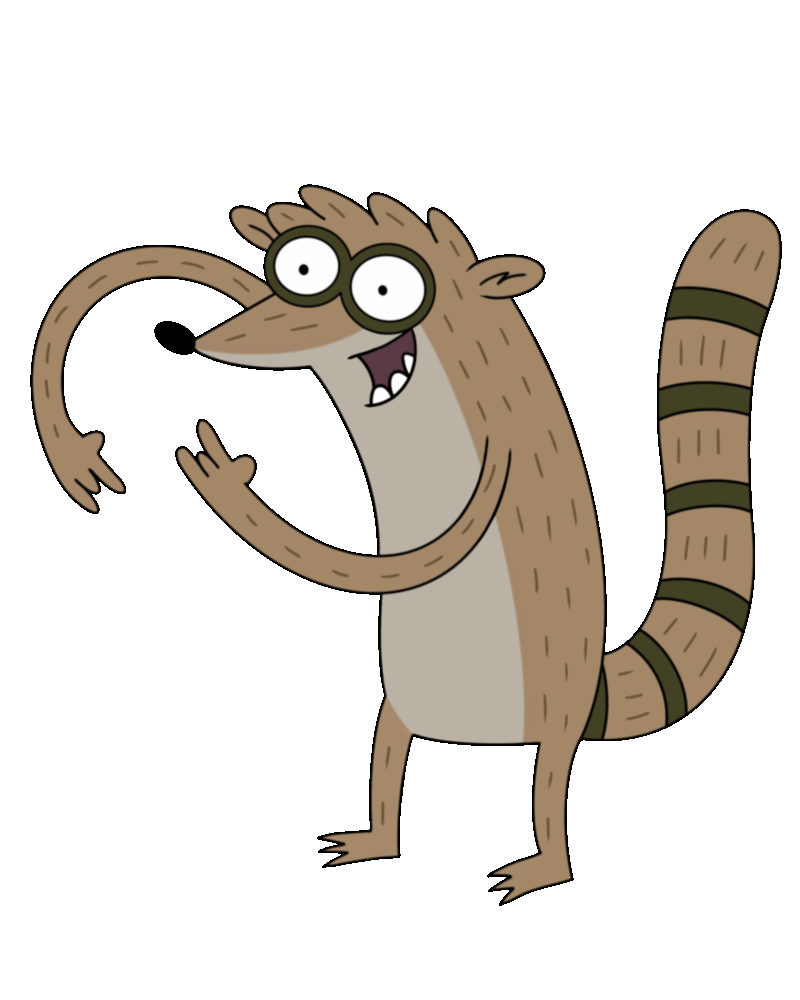

Personaggi Principali
Rigby
Rigby è un procione immaturo e impulsivo, miglior amico di Mordecai. Nonostante la sua pigrizia e i comportamenti egoistici, ha un lato maturo che emerge durante la serie. Alla fine si sposa con Eileen e hanno due figlie.